China · Tier VIII
All nations and tiers · EU v20410 → RU v14600ru · 3 November 2026
110 · Tier VIII
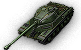
Penetration (mm)
EU  AP 227 /
AP 227 /  APCR 265 /
APCR 265 /  HE 50 → RU
HE 50 → RU  AP 230 /
AP 230 /  APCR 265 /
APCR 265 /  HE 50
HE 50
Firepower
DPM (HP/min) EU 2 355.95  RU 2 225.07
RU 2 225.07
Rate of fire (rounds/min) EU 7.36 RU 6.95
Reload time (s) EU 8.15 RU 8.63
Gun handling
Aim time (s) EU 2.01 RU 2.40
Dispersion (m/100 m) EU 0.34 RU 0.35
Dispersion · damaged EU 0.67 RU 0.71
Dispersion · moving EU 0.18  RU 0.16
RU 0.16
Dispersion · tank traverse EU 0.18 RU 0.16
Mobility
Forward speed (km/h) EU 47 RU 42
Forward speed on hard terrain (km/h) EU 47 RU 42
Forward speed on medium terrain (km/h) EU 47 RU 42
Forward speed on soft terrain (km/h) EU 24 RU 24.51
Reverse speed (km/h) EU 15 RU 16
Engine power (hp) EU 700 RU 715
Power/weight (hp/t) EU 13.87 RU 14.17
Turret traverse (°/s) EU 31.29 RU 27.12
Tank traverse (°/s) EU 35.46 RU 31.29
Tank traverse on hard terrain (°/s) EU 34.14 RU 37.37
Tank traverse on medium terrain (°/s) EU 31.03 RU 33.98
Tank traverse on soft terrain (°/s) EU 15.52 RU 16.99
Armor & health
Hull armor · front (mm) EU 120 RU 140
Health EU 1 700 RU 1 550
59-Patton · Tier VIII
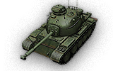
Damage (HP)
EU  AP 280 /
AP 280 /  HEAT 280 /
HEAT 280 /  HE 370 → RU
HE 370 → RU  AP 240 /
AP 240 /  HEAT 240 /
HEAT 240 /  HE 320
HE 320
Firepower
DPM (HP/min) EU 2 336.32 RU 2 241.67
Rate of fire (rounds/min) EU 8.34 RU 9.34
Reload time (s) EU 7.19 RU 6.42
Potential damage EU 15 120 RU 12 960
Gun handling
Aim time (s) EU 1.63 RU 1.82
Dispersion (m/100 m) EU 0.35 RU 0.32
Dispersion · damaged EU 0.69 RU 0.63
Dispersion · turret traverse EU 0.06 RU 0.10
BZ-166 · Tier VIII
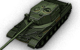
Firepower
DPM (HP/min) EU 1 877.40 RU 2 021.82
Rate of fire (rounds/min) EU 4.47 RU 4.81
Reload time (s) EU 13.42 RU 12.46
Gun handling
Dispersion (m/100 m) EU 0.40 RU 0.42
Dispersion · damaged EU 0.81 RU 0.84
Dispersion · turret traverse EU 0.14 RU 0.16
Mobility
Forward speed on soft terrain (km/h) EU 26.34 RU 23.94
Engine power (hp) EU 770 RU 700
Power/weight (hp/t) EU 14.53 RU 13.21
Tank traverse on hard terrain (°/s) EU 30.89 RU 36.76
Tank traverse on medium terrain (°/s) EU 22.06 RU 26.26
Tank traverse on soft terrain (°/s) EU 14.71 RU 17.51
Armor & health
Health EU 1 650 RU 1 600
Miscellaneous
View range (m) EU 360 RU 370
BZ-74-1 · EU VIII → RU X
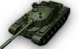
Penetration (mm)
EU  AP 223 /
AP 223 /  HEAT 270 /
HEAT 270 /  HE 61 → RU
HE 61 → RU  AP 258 /
AP 258 /  HEAT 330 /
HEAT 330 /  HE 65
HE 65
Damage (HP)
EU  AP 420 /
AP 420 /  HEAT 420 /
HEAT 420 /  HE 550 → RU
HE 550 → RU  AP 560 /
AP 560 /  HEAT 560 /
HEAT 560 /  HE 700
HE 700
General
Tier EU 8 → RU 10
Firepower
DPM (HP/min) EU 1 877.40 RU 2 539.48
Module damage EU 165 RU 173
Rate of fire (rounds/min) EU 4.47 RU 4.53
Reload time (s) EU 13.42 RU 13.23
Caliber EU 122 RU 130
Shell velocity (m/s) EU 930 RU 1 020
Ammo capacity EU 40 RU 38
Potential damage EU 16 800 RU 21 280
Gun handling
Aim time (s) EU 2.59 RU 2.68
Dispersion (m/100 m) EU 0.37 RU 0.38
Dispersion · damaged EU 0.75 RU 0.77
Dispersion · moving EU 0.15 RU 0.11
Dispersion · tank traverse EU 0.15 RU 0.11
Dispersion · turret traverse EU 0.08 RU 0.11
Mobility
Forward speed (km/h) EU 50 RU 48
Forward speed on hard terrain (km/h) EU 50 RU 48
Forward speed on medium terrain (km/h) EU 49.21 RU 48
Reverse speed (km/h) EU 15 RU 16
Weight (kg) EU 58 000 → RU 57 995
Turret traverse (°/s) EU 26.08 RU 34.42
Tank traverse (°/s) EU 35.46 RU 34.42
Tank traverse on hard terrain (°/s) EU 33.69 RU 32.70
Tank traverse on medium terrain (°/s) EU 30.88 RU 29.97
Tank traverse on soft terrain (°/s) EU 14.82 RU 14.39
Armor & health
Hull armor · front (mm) EU 180 RU 230
Hull armor · side (mm) EU 60 RU 70
Turret armor · front (mm) EU 220 RU 285
Turret armor · side (mm) EU 100 RU 110
Health EU 1 500 RU 2 300
Health · engine EU 275 RU 360
Health · track EU 220 RU 250
Health · fuel tank EU 175 RU 200
Track repair time (s) EU 11.70 RU 12.03
Miscellaneous
Stationary camo EU 5.76 RU 6.27
Stationary camo · after firing EU 0.88 RU 0.96
View range (m) EU 370 RU 400
Radio range (m) EU 570 RU 700
Fire chance (%) EU 15 RU 12
Shell cost EU 794 RU 1 260
M41D · Tier VIII
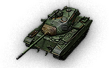
Gun handling
Dispersion · moving EU 0.10 RU 0.14
Dispersion · tank traverse EU 0.10 RU 0.14
Dispersion · turret traverse EU 0.04 RU 0.06
T-34-2 · Tier VIII
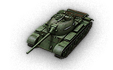
Penetration (mm)
EU  AP 212 /
AP 212 /  HEAT 280 /
HEAT 280 /  HE 61 → RU
HE 61 → RU  AP 212 /
AP 212 /  APCR 258 /
APCR 258 /  HE 50
HE 50
Damage (HP)
EU  AP 390 /
AP 390 /  HEAT 390 /
HEAT 390 /  HE 530 → RU
HE 530 → RU  AP 250 /
AP 250 /  APCR 250 /
APCR 250 /  HE 330
HE 330
Firepower
DPM (HP/min) EU 2 068.32 RU 2 086
Module damage EU 165 RU 135
Rate of fire (rounds/min) EU 5.30 RU 8.34
Reload time (s) EU 11.31 RU 7.19
Caliber EU 122 RU 100
Ammo capacity EU 40 RU 45
Potential damage EU 15 600 RU 11 250
Gun handling
Aim time (s) EU 2.30 RU 2.40
Dispersion (m/100 m) EU 0.36 RU 0.35
Dispersion · damaged EU 0.73 RU 0.69
Dispersion · moving EU 0.16 RU 0.18
Dispersion · tank traverse EU 0.16 RU 0.18
Elevation (°) EU 15 RU 18
Mobility
Forward speed on soft terrain (km/h) EU 38.97 RU 44.35
Engine power (hp) EU 630 RU 713.22
Weight (kg) EU 34 183 → RU 34 000
Power/weight (hp/t) EU 18.43 RU 20.98
Tank traverse (°/s) EU 58.41 RU 47.98
Tank traverse on hard terrain (°/s) EU 60.33 RU 60.54
Tank traverse on medium terrain (°/s) EU 53.63 RU 53.81
Tank traverse on soft terrain (°/s) EU 26.81 RU 26.91
Armor & health
Turret armor · front (mm) EU 180 RU 190
Health EU 1 550 RU 1 400
Miscellaneous
Stationary camo · after firing EU 3.41 RU 3.75
Moving camo · after firing EU 2.55 RU 2.81
Shell cost EU 1 025 RU 252
WZ-111 · Tier VIII
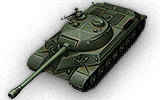
Firepower
DPM (HP/min) EU 2 033.85 RU 1 952.50
Rate of fire (rounds/min) EU 5.21 RU 5.01
Reload time (s) EU 11.51 RU 11.98
Gun handling
Aim time (s) EU 2.49 RU 2.68
Dispersion (m/100 m) EU 0.37 RU 0.40
Dispersion · damaged EU 0.75 RU 0.81
Dispersion · turret traverse EU 0.10 RU 0.12
Mobility
Forward speed on medium terrain (km/h) EU 50 RU 46.65
Forward speed on soft terrain (km/h) EU 26.05 RU 23.33
Engine power (hp) EU 670 RU 600
Power/weight (hp/t) EU 15.06 RU 13.48
WZ-111 Alpine Tiger · Tier VIII
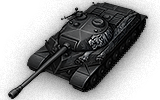
Firepower
DPM (HP/min) EU 2 033.85 RU 1 952.50
Rate of fire (rounds/min) EU 5.21 RU 5.01
Reload time (s) EU 11.51 RU 11.98
Gun handling
Aim time (s) EU 2.49 RU 2.68
Dispersion (m/100 m) EU 0.37 RU 0.40
Dispersion · damaged EU 0.75 RU 0.81
Dispersion · turret traverse EU 0.10 RU 0.12
Mobility
Forward speed on medium terrain (km/h) EU 50 RU 46.65
Forward speed on soft terrain (km/h) EU 26.05 RU 23.33
Engine power (hp) EU 670 RU 600
Power/weight (hp/t) EU 15.06 RU 13.48
WZ-111 model 6 · Tier VIII
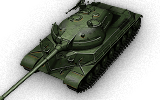
Penetration (mm)
EU  APCR 227 /
APCR 227 /  HEAT 290 /
HEAT 290 /  HE 60 → RU
HE 60 → RU  APCR 218 /
APCR 218 /  HEAT 290 /
HEAT 290 /  HE 60
HE 60
Gun handling
Aim time (s) EU 2.49 RU 2.68
Dispersion · moving EU 0.20 RU 0.23
Dispersion · tank traverse EU 0.20 RU 0.23
Mobility
Turret traverse (°/s) EU 29.20 RU 25.03
Tank traverse (°/s) EU 31.29 RU 27.12
Tank traverse on hard terrain (°/s) EU 29.73 RU 25.76
Tank traverse on medium terrain (°/s) EU 27.25 RU 23.62
Tank traverse on soft terrain (°/s) EU 13.08 RU 11.34
WZ-111-1G FT · Tier VIII
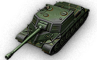
Gun handling
Dispersion · moving EU 0.24 RU 0.23
Dispersion · tank traverse EU 0.24 RU 0.23
Mobility
Tank traverse (°/s) EU 31.29 RU 26.08
Tank traverse on hard terrain (°/s) EU 31.81 RU 31.18
Tank traverse on medium terrain (°/s) EU 24.99 RU 24.50
Tank traverse on soft terrain (°/s) EU 15.21 RU 14.91
Armor & health
Health EU 1 300 RU 1 250
WZ-113-II · Tier VIII
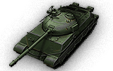
Gun handling
Aim time (s) EU 2.30 RU 2.49
Dispersion · moving EU 0.18 RU 0.20
Dispersion · tank traverse EU 0.18 RU 0.20
Mobility
Forward speed (km/h) EU 50 RU 48
Forward speed on hard terrain (km/h) EU 50 RU 48
Forward speed on medium terrain (km/h) EU 50 RU 48
Forward speed on soft terrain (km/h) EU 24.90 RU 23.77
Reverse speed (km/h) EU 15 RU 14
Engine power (hp) EU 660 RU 630
Power/weight (hp/t) EU 16.35 RU 15.61
WZ-132 · Tier VIII

Penetration (mm)
EU  AP 189 /
AP 189 /  APCR 233 /
APCR 233 /  HE 50 → RU
HE 50 → RU  AP 189 /
AP 189 /  APCR 225 /
APCR 225 /  HE 50
HE 50
Damage (HP)
EU  AP 280 /
AP 280 /  APCR 280 /
APCR 280 /  HE 350 → RU
HE 350 → RU  AP 250 /
AP 250 /  APCR 250 /
APCR 250 /  HE 330
HE 330
Firepower
DPM (HP/min) EU 2 086 RU 2 005.77
Rate of fire (rounds/min) EU 7.45 RU 8.02
Reload time (s) EU 8.05 RU 7.48
Potential damage EU 12 040 RU 10 750
Gun handling
Aim time (s) EU 1.92 RU 2.21
Dispersion (m/100 m) EU 0.36 RU 0.38
Dispersion · damaged EU 0.73 RU 0.77
Dispersion · turret traverse EU 0.10 RU 0.08
Depression (°) EU 6 RU 5
Mobility
Forward speed (km/h) EU 68 RU 64
Forward speed on hard terrain (km/h) EU 68 RU 64
Forward speed on medium terrain (km/h) EU 68 RU 64
Forward speed on soft terrain (km/h) EU 68 RU 64
Engine power (hp) EU 750 RU 700
Power/weight (hp/t) EU 30.85 RU 28.79
Turret traverse (°/s) EU 44.85 RU 50.06
Tank traverse (°/s) EU 46.93 RU 58.41
Tank traverse on hard terrain (°/s) EU 48.64 RU 71.90
Tank traverse on medium terrain (°/s) EU 40.53 RU 59.92
Tank traverse on soft terrain (°/s) EU 18.71 RU 27.65
Armor & health
Track armor EU 10 RU 15
Health EU 1 300 RU 1 100
Miscellaneous
Stationary camo EU 16.07 RU 16.70
Stationary camo · after firing EU 3.36 RU 3.49
Moving camo EU 16.07 RU 16.70
Moving camo · after firing EU 3.36 RU 3.49
View range (m) EU 390 RU 380
WZ-132 FL · Tier VIII
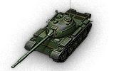
Penetration (mm)
EU  AP 189 /
AP 189 /  APCR 233 /
APCR 233 /  HE 50 → RU
HE 50 → RU  AP 189 /
AP 189 /  APCR 225 /
APCR 225 /  HE 50
HE 50
Damage (HP)
EU  AP 280 /
AP 280 /  APCR 280 /
APCR 280 /  HE 350 → RU
HE 350 → RU  AP 250 /
AP 250 /  APCR 250 /
APCR 250 /  HE 330
HE 330
Firepower
DPM (HP/min) EU 2 086 RU 2 005.77
Rate of fire (rounds/min) EU 7.45 RU 8.02
Reload time (s) EU 8.05 RU 7.48
Potential damage EU 12 040 RU 10 750
Gun handling
Aim time (s) EU 1.92 RU 2.21
Dispersion (m/100 m) EU 0.36 RU 0.38
Dispersion · damaged EU 0.73 RU 0.77
Dispersion · turret traverse EU 0.10 RU 0.08
Depression (°) EU 6 RU 5
Mobility
Forward speed (km/h) EU 68 RU 64
Forward speed on hard terrain (km/h) EU 68 RU 64
Forward speed on medium terrain (km/h) EU 68 RU 64
Forward speed on soft terrain (km/h) EU 68 RU 64
Engine power (hp) EU 750 RU 700
Power/weight (hp/t) EU 30.85 RU 28.79
Turret traverse (°/s) EU 44.85 RU 50.06
Tank traverse (°/s) EU 46.93 RU 58.41
Tank traverse on hard terrain (°/s) EU 46.93 RU 58.41
Tank traverse on medium terrain (°/s) EU 39.11 RU 48.67
Tank traverse on soft terrain (°/s) EU 18.05 RU 22.46
Armor & health
Track armor EU 10 RU 15
Health EU 1 300 RU 1 100
Miscellaneous
Stationary camo EU 16.07 RU 16.70
Stationary camo · after firing EU 3.36 RU 3.49
Moving camo EU 16.07 RU 16.70
Moving camo · after firing EU 3.36 RU 3.49
View range (m) EU 390 RU 380